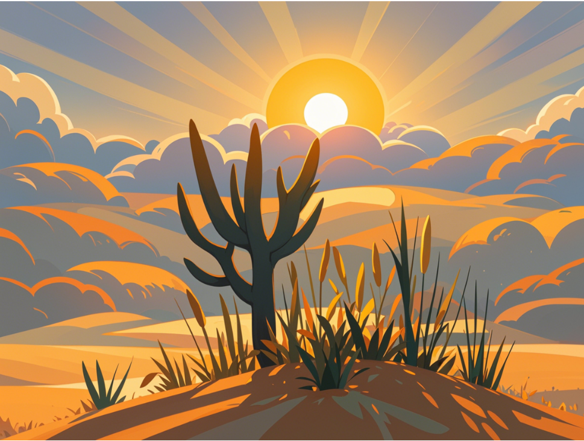
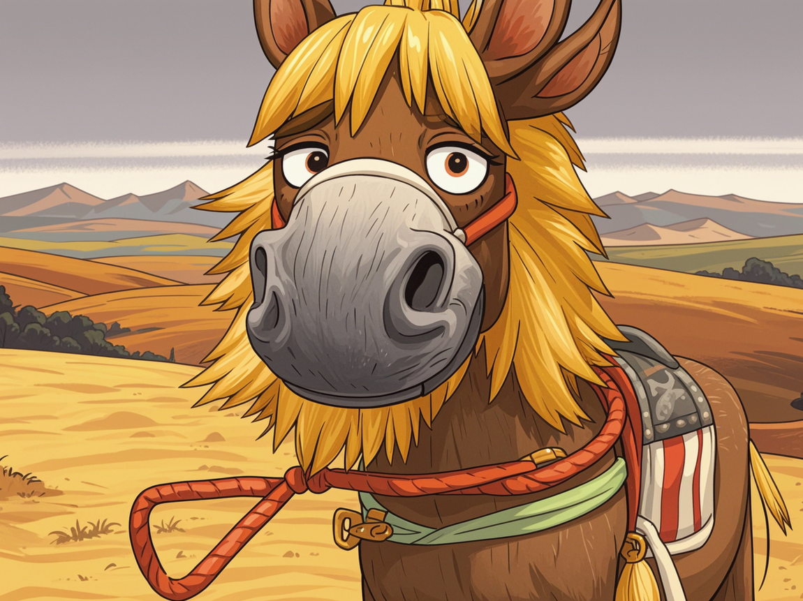
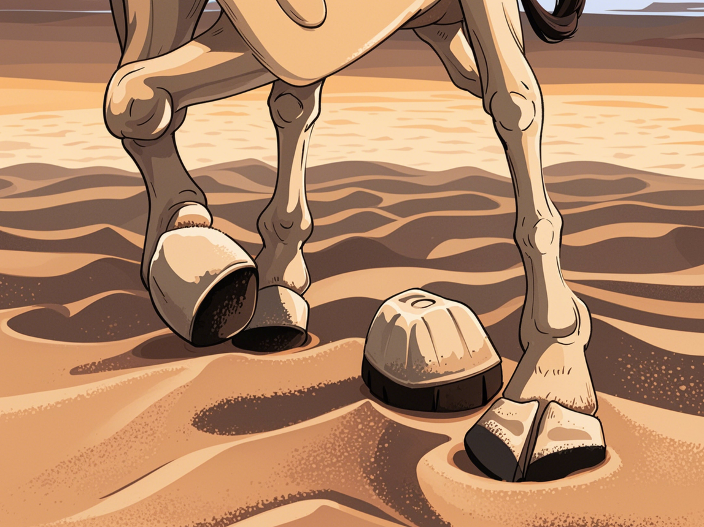
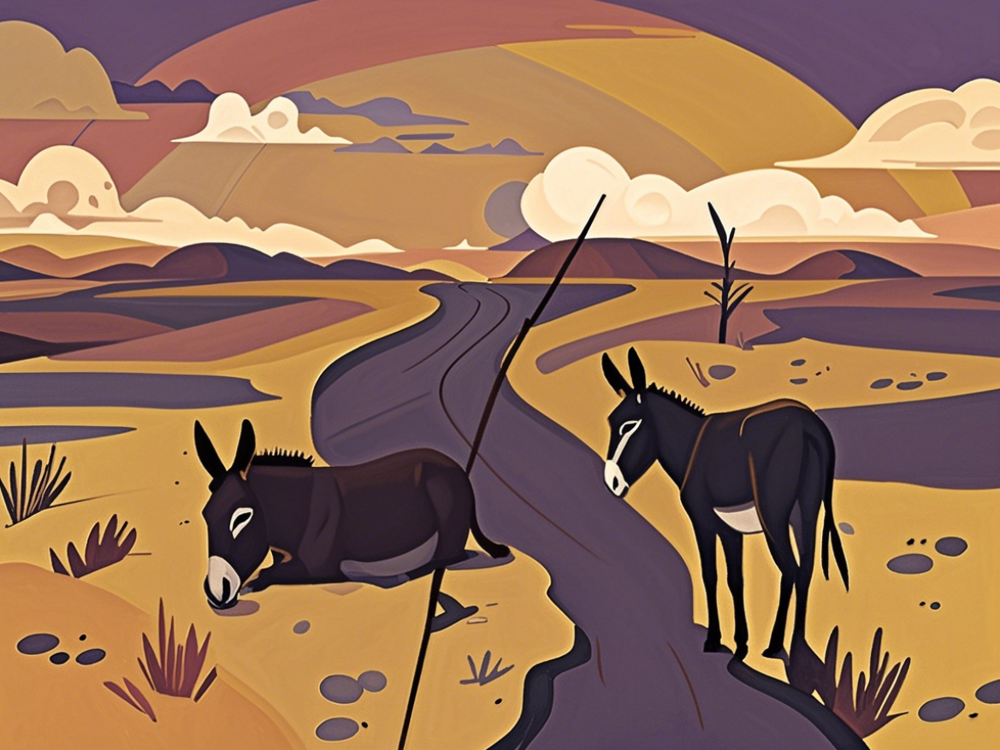

精疲力尽
-
场景一：环境：画面比例 4:3，一片金黄沙丘，昏黄的天空下太阳只露出一小边，散发着微弱的光线。

-
场景二：瘦驴特写：瘦驴的面部及上半身特写。风沙吹打在它粗糙的皮毛上，它大口喘着粗气，眼睛半睁半闭，眼神中透露出极度的疲惫与无奈。驮具在背上显得愈发沉重，绳子勒紧的地方很红。

-
场景三：沙驴特写：沙里的驴，蹄子陷在沙子里，只露出一部分，能清晰看到蹄子用力挣扎后留下的痕迹。

-
场景四：周边细节：周围几株歪歪扭扭的干枯梭梭草，在狂风中瑟瑟发抖，地上杂乱的蹄印向远处延伸。

.video-frame {
display: block;
margin: 20px auto;
}